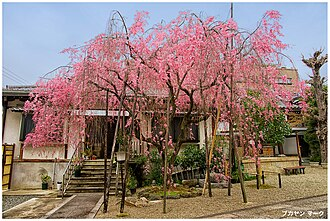
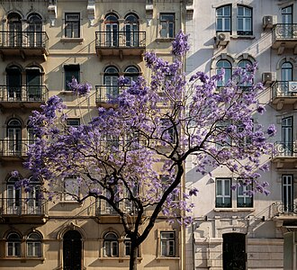
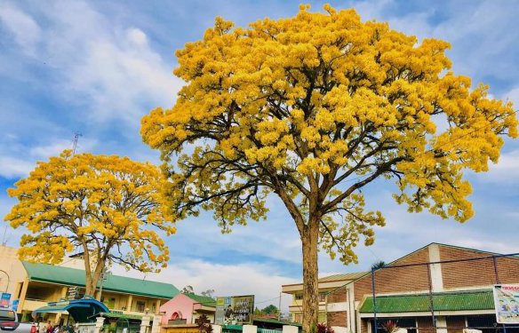
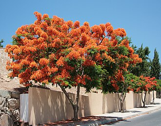
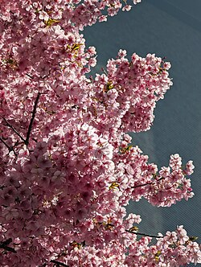
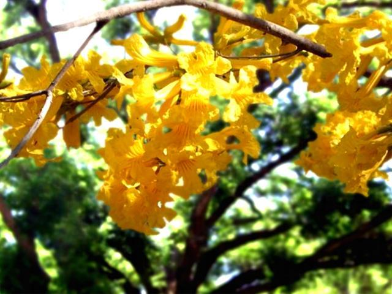
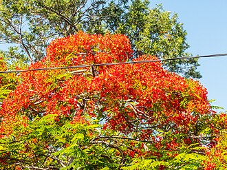

Trees
In botany, a tree is a perennial plant with an elongated stem, or trunk, usually supporting branches and leaves. In some usages, the definition of a tree may be narrower, e.g., including only woody plants with secondary growth, only plants that are usable as lumber, or only plants above a specified height. Wider definitions include taller palms, tree ferns, bananas, and bamboos.Trees are not a monophyletic taxonomic group but consist of a wide variety of plant species that have independently evolved a trunk and branches as a way to tower above other plants to compete for sunlight. The majority of tree species are angiosperms or hardwoods; of the rest, many are gymnosperms or softwoods. Trees tend to be long-lived, some trees reaching several thousand years old. The earliest trees evolved around 400 million years ago, and it is estimated that there are around three trillion mature trees in the world currently. A tree typically has many secondary branches supported clear of the ground by the trunk, which typically contains woody tissue for strength, and vascular tissue to carry materials from one part of the tree to another. For most trees the trunk is surrounded by a layer of bark which serves as a protective barrier. Below the ground, the roots branch and spread out widely; they serve to anchor the tree and extract moisture and nutrients from the soil. Above ground, the branches divide into smaller branches and shoots. The shoots typically bear leaves, which capture light energy and convert it into sugars by photosynthesis, providing the food for the tree's growth and development. Read more...
4 types of trees you might find interesting
| Sakura | Jacaranda Mimosifolia |
|---|---|
 |
 |
| Golden Trumpet Tree | Delonix Regia |
 |
 |
.jpeg){kind=link}
_in_bloom,_Miguel_Bombarda_Avenue,_Lisbon,_Portugal_julesvernex2.jpg){kind=link}
{kind=link}
{kind=link}
Sakura

The cherry blossom, or sakura, is the flower of trees in Prunus subgenus Cerasus. Sakura usually refers to flowers of ornamental cherry trees, such as cultivars of Prunus serrulata, not trees grown for their fruit: 14–18 (although these also have blossoms). Cherry blossoms have been described as having a vanilla-like smell, which is mainly attributed to coumarin.Most of the ornamental cherry trees planted in parks and other places for viewing are cultivars developed for ornamental purposes from various wild species. In order to create a cultivar suitable for viewing, a wild species with characteristics suitable for viewing is needed. Prunus speciosa (Oshima cherry), which is endemic to Japan, produces many large flowers, is fragrant, easily mutates into double flowers and grows rapidly. As a result, various cultivars, known as the Cerasus Sato-zakura Group, have been produced since the 14th century and continue to contribute greatly to the development of hanami (flower viewing) culture.[1]: 27, 89–91 [6]: 160–161 From the modern period, cultivars are mainly propagated by grafting, which quickly produces cherry trees with the same genetic characteristics as the original individuals, and which are excellent to look at.
Japanese word sakura (桜; Japanese pronunciation: [sa.kɯ.ɾa]) can mean either the tree or its flowers (see 桜). The cherry blossom is considered the national flower of Japan, and is central to the custom of hanami.
Sakura trees are often called Japanese cherry in English. (This is also a common name for Prunus serrulata.) The cultivation of ornamental cherry trees began to spread in Europe and the United States in the early 20th century, particularly after Japan presented trees to the United States as a token of friendship in 1912.[1]: 119–123 British plant collector Collingwood Ingram conducted important studies of Japanese cherry trees after the First World War.
Read more...
Jacaranda Mimosifolia
Jacaranda mimosifolia is a sub-tropical tree native to south-central South America that has been widely planted elsewhere because of its attractive and long-lasting violet-colored flowers. It is also known as the jacaranda, blue jacaranda, black poui, Nupur or fern tree. Older sources call it J. acutifolia, but modern authorities usually classify it as J. mimosifolia. In scientific usage, the name "jacaranda" refers to the genus Jacaranda, which has many other members, but in horticultural and everyday usage, it nearly always means the blue jacaranda.
Jacaranda mimosifolia is native to southern Brazil, Uruguay, Paraguay, northern Argentina (Salta, Jujuy, Catamarca, and Misiones provinces), and southern Bolivia. It is found in the Dry Chaco and flooded savannas, and in the Southern Andean Yungas of the eastern Andean piedmont and inter-Andean valleys, up to 2600 meters elevation. In its native range, the tree is threatened by uncontrolled logging and clearing of land for agriculture, and is assessed as Vulnerable in the IUCN Red List. The jacaranda is regarded as an invasive species in parts of South Africa, Namibia, and Queensland, Australia, where it can out-compete native species
Read more...
Golden Trumpet Tree

Handroanthus chrysotrichus, synonym Tabebuia chrysotricha, commonly known as the golden trumpet tree, is a semi-evergreen/semi-deciduous (shedding foliage for a short period in late spring) tree from Brazil. It is very similar to and often confused with Tabebuia ochracea. In Portuguese it is called ipê amarelo and its flower is considered the national flower of Brazil.
The golden trumpet tree is grown outside Brazil as a street tree and garden tree. The USDA rates it for hardiness zones 9b through 11, and moderately drought-tolerant. Concern has been raised that it is becoming a weed in tropical and sub-tropical Australia, though it has not yet been declared. A 2007 DNA study of various members classified in the genus Tabebuia showed that the taxon was polyphyletic, and two genera were resurrected to separate these members into three separate clades: Roseodendron, Handroanthus, and Tabebuia. Tabebuia chrysotricha was moved to Handroanthus chrysotrichus, characterized by the hardness of its wood and high lapachol content.
Read more...
Delonix Regia

Delonix regia is a species of flowering plant in the bean family Fabaceae, subfamily Caesalpinioideae native to Madagascar. It is noted for its fern-like leaves and flamboyant display of orange-red flowers over summer. In many tropical parts of the world it is grown as an ornamental tree. It is a non-nodulating legume.
Although its country of origin was unknown, it had been in widespread cultivation for centuries. Finally, in 1932, a natural colony was discovered on the west coast of Madagascar by J. Leandri. Its common names include "flame tree" (one of several species given this name), peacock flower, royal poinciana, flamboyant, phoenix flower, flame of the forest. The name poinciana comes from a genus it was once placed in named Poinciana after Phillippe de Longvilliers de Poincy, a French noble who once governed the Caribbean island of Saint Kitts.
The flowers are large, with four spreading scarlet or orange-red petals forming a diameter up to 8–11 cm (3–4 in) long, and a fifth upright petal called the standard, which is slightly larger and spotted with yellow and white. They appear in corymbs along and at the ends of branches.[7]: 466–467 The naturally occurring variety flavida (Bengali: Radhachura) has yellow flowers.
Read more...